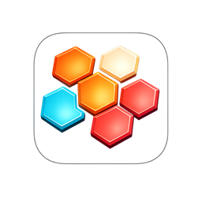
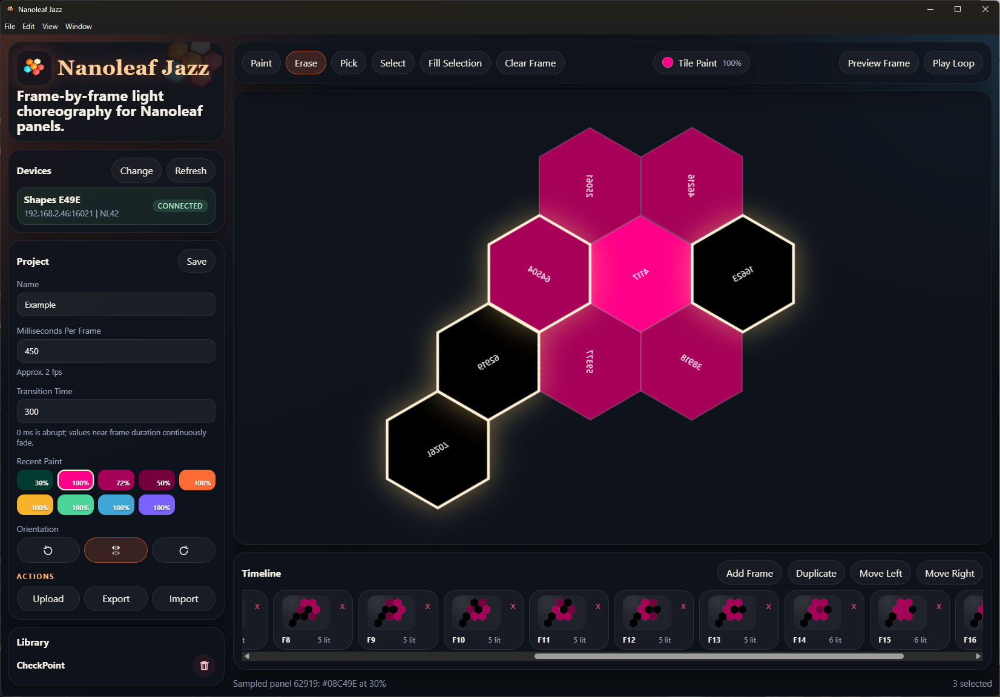

Paint the timeline
Create frames, duplicate beats, reorder moments, and tune frame duration or transition time where the animation needs a hold, cut, or fade.

Nanoleaf Jazz Download
Local-first editor for Nanoleaf panels
Paint frame-by-frame light animations on your real panel layout, preview them live across your LAN, and upload polished custom effects to your Nanoleaf controller.
Designed for real light layouts
Nanoleaf Jazz reads your controller layout, keeps your projects on your machine, and gives you timeline controls for color, brightness, frame timing, transitions, orientation, import, export, and device effects.
Create frames, duplicate beats, reorder moments, and tune frame duration or transition time where the animation needs a hold, cut, or fade.
Send one frame or loop the full animation to your Nanoleaf panels before committing the effect to the controller.
Project files, recent paints, and pairing configuration stay on your machine. Export JSON when you want a portable project file.
From idea to installed effect
Start with a blank project or load a supported device effect, sketch color changes with recent paints and fill tools, then upload the result as a persistent Nanoleaf effect.
Ready when you are
Releases include installers, portable Electron packages, and a lightweight browser launcher for desktop workflows.